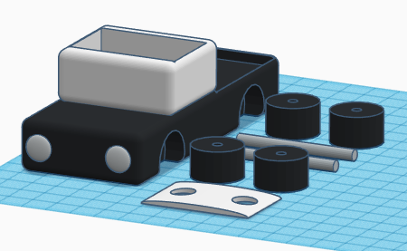
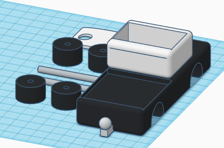

Juan's site
TinkerCad Car Project
In TinkerCad our teacher let us be creative and design our own vechile that we could maybe print.
I decided to with the challenge of making a police truck. I would incorpate former aurduino parts like the red and blue LED lights to match the color lights normal police cars have.
The hardest part of this project would be incorporating the feature of making seperate parts of a vechile and hoping they could all come together into parts that could be connected and make a moving car.
 